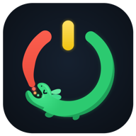
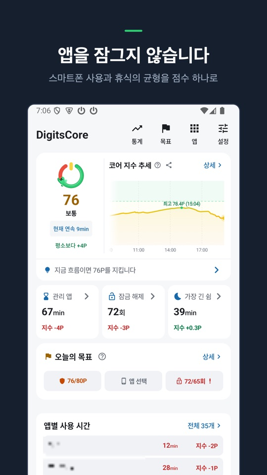
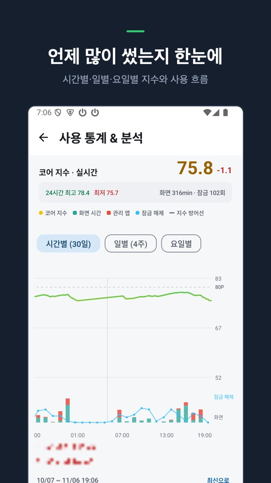
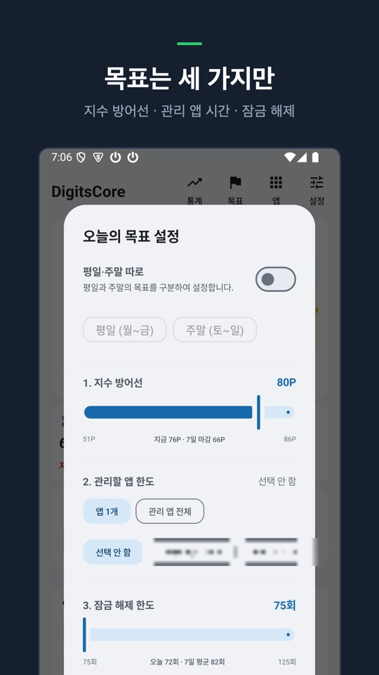
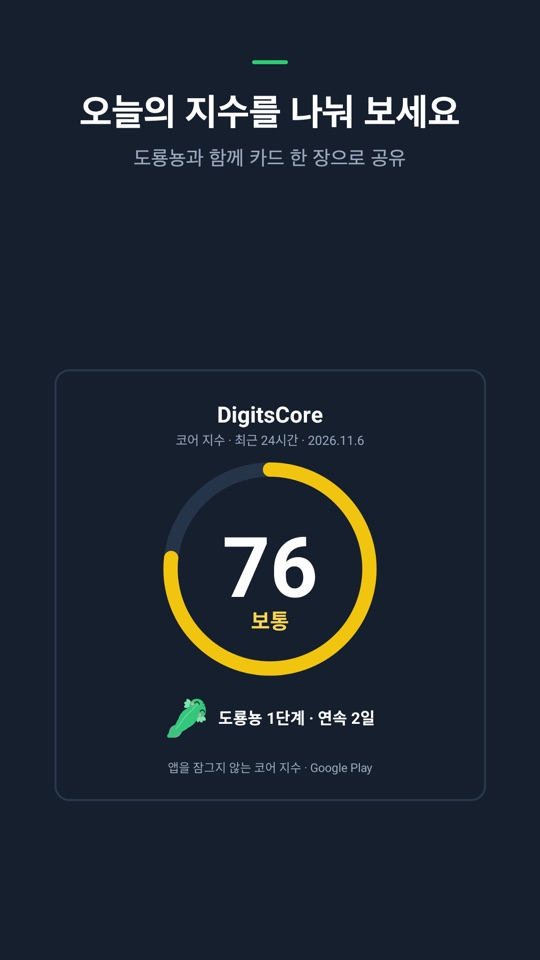
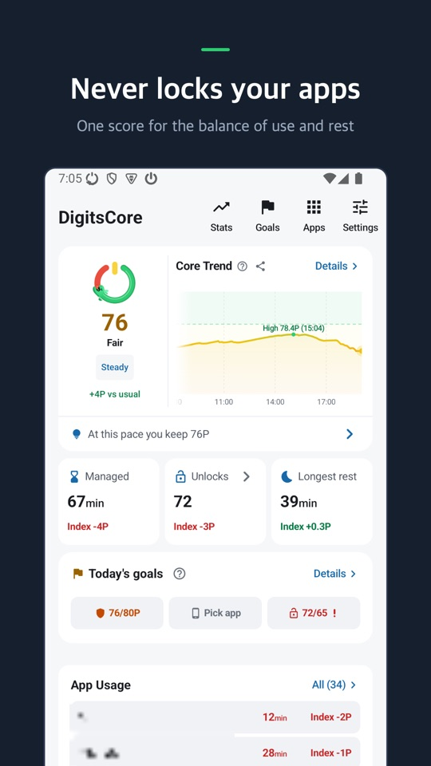
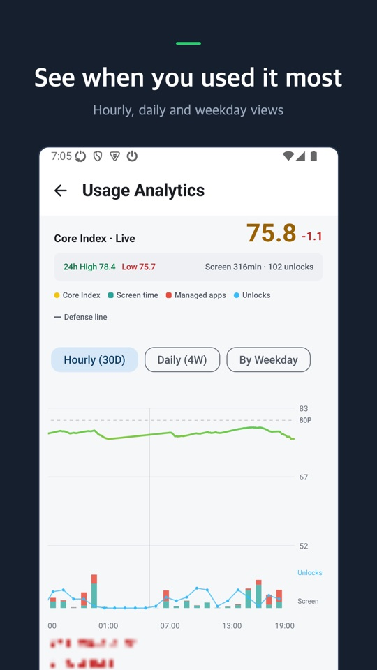
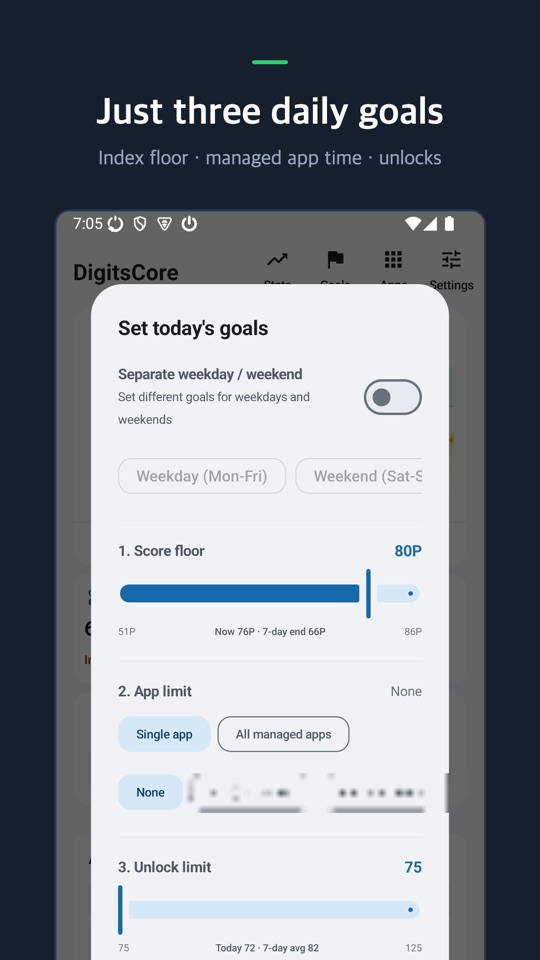
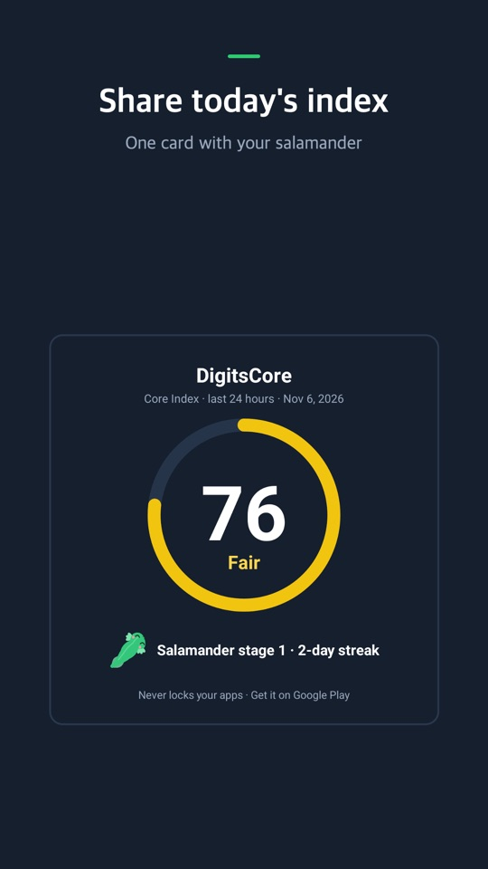

DigitsCore
스마트폰 사용과 휴식의 균형을 점수 하나로
스마트폰 사용에 대한 자세한 내용을 보여 주는 앱은 많습니다. 그런데 너무 자세한 내용은 오히려 지금 내 상태를 아는 데 방해가 된다고 생각했습니다. 그래서 지금 사용과 휴식의 균형을 1~99점 코어 지수 하나로 보여 줍니다. 앱을 강제로 잠그지 않습니다. 지금 내 상태를 보고 스스로 조절하도록 돕습니다.




코어 지수
최근 24시간의 사용과 휴식으로 계산하며 자정에 초기화되지 않습니다. 관리할 앱을 오래 이어 쓰면 내려가고, 화면을 끄고 쉬면 다시 올라갑니다.
잠그지 않습니다
목표 한도에 닿아도 앱을 막지 않습니다. 조금 더 쓸지, 오늘은 그만할지 직접 고릅니다.
정확한 측정
화면에 실제로 보이는 앱만 셉니다. 분할 화면과 PiP도 처리하고, 짧은 확인까지 기록합니다.
앱 등급
지도·통화 같은 필수 앱은 점수를 낮추지 않고, 숏폼·SNS·게임처럼 관리할 앱은 더 크게 반영합니다.
도룡뇽과 연속 기록
목표를 지킨 날이 이어지면 도룡뇽이 자랍니다. 지수에 따라 앱 아이콘 색도 바뀝니다.
기록은 기기 안에만
인터넷 권한과 계정이 없습니다. 사용 기록은 기기 밖으로 나가지 않고 암호화되어 저장됩니다.
DigitsCore는 의료용 앱이 아닙니다. 코어 지수는 스마트폰 사용 습관을 돌아보기 위한 참고 지표입니다.
문의: DigitsCore@gmail.com · 개인정보처리방침 · 개발기 · 4J Works
DigitsCore
One score for the balance of phone use and rest
Many apps show detailed phone-usage numbers. But too much detail can get in the way of knowing where you stand right now. So DigitsCore shows the balance of your use and rest as one number: the Core Index (1–99). Nothing is force-locked. It shows where you are so you can adjust on your own.




Core Index
Based on the last 24 hours of use and rest, and it never resets at midnight. It drops during long stretches in apps you want to manage, and rises again when the screen is off.
Nothing is locked
Reaching a goal limit never blocks an app. You decide whether to keep going or stop for today.
Accurate measurement
Only the app actually on screen counts. Split screen and PiP are handled, and short checks are recorded too.
App grades
Essentials like maps and calls never lower the index, while short video, social and games count more.
Salamander and streaks
Your salamander grows as goal days add up, and the app icon color follows your index.
Stays on your phone
No internet permission and no account. Your usage history never leaves the device and is stored encrypted.
DigitsCore is not a medical app. The Core Index is a reference for reflecting on your phone habits.
Contact: DigitsCore@gmail.com · Privacy Policy · 4J Works